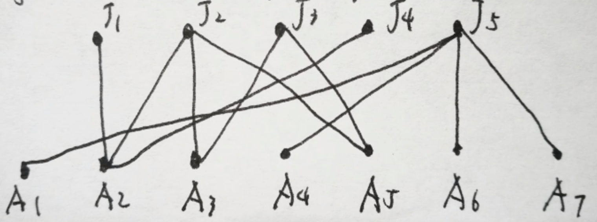
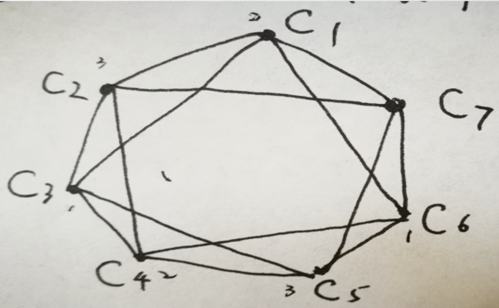

【例 1】某个图具有 n≥8 个顶点，试问：这些顶点的度数可否分别为 4,5,6,⋯,n−4,n−3,n−2,n−2,n−2,n−1,n−1,n−1？
【解】当 n=8 时，即需要构造出度数为 4,5,6,6,6,7,7,7 的图：
- 考虑三个度数为 7 的点 x1,x2,x3，需要和所有其他点相连；
- 考虑三个度数为 6 的点 x4,x5,x6，假设他们之间互相相连，那么至少需要与 x7,x8 其一相连，而 x7,x8 度数分别为 5, 4，于是可以令 x4,x5 与 x7 相连，x6 与 x8 相连，即满足条件。
当 n=9 时，在上述构造上继续构造，需要构造出度数为 4,5,6,7,7,7,8,8,8 的图：考虑在上面构造的图中加入一个点 x9：
- 令 x9 和 x1,x2,x3 均相连，那么这三个点度数变为 8；
- 令 x9 和 x4,x5,x6 均相连，那么这三个点的度数变为 7；
- x9 自己的度数为 6，且 x7,x8 的度数保持不变，分别为 5,4，满足条件。
但是我们发现 n=10 时不满足条件，下面我们证明 n≥10 均无法构造。对于任意 n≥10，度数序列为 4,5,6,⋯,n−4,n−3,n−2,n−2,n−2,n−1,n−1,n−1，分为三部分：
{n−1,n−1,n−1},{n−2,n−2,n−2},{4,5,6,⋯,n−3} - 第一部分的点必须和其他点全部相连（确定的构造），于是第二部分和第三部分每个点都需要给第一部分的点提供 3 度。
- 第二部分的点除和第一部分的 3 个点相连外，在第二部分内部最多解决 2 个点，因此至少需在第三部分的 n−6 个点中连 n−7 个点；于是第三部分至少需给第二部分提供 3(n−7) 度。
- 考虑第三部分点，给第一部分点提供 3 度后，剩余可用度数为 1,2,3,⋯,n−6，最多可以给第二部分的点提供的度数为：
1+2+n−8 个3+⋯+3=3(n−7) 到这里我们发现，至少提供 = 最多提供，因此必须刚好提供 3(n−7) 个点，也就意味着第三部分中剩余可用度数为 1,2,3 的点必须把这些度数全部提供给第二部分点。于是，提供给第二部分点后度数变为 0,0,0,1,2,⋯,n−9；这些度数必须在第三部分内部自行解决。但是我们发现，剩余度数为 n−9 的点在第三部分内最多只能连除自己外的剩下 n−10 个度数非 0 的点，导出矛盾。
综上，对于 n≥10，均无法进行构造。
【例 2】有 5 个工作 J1,J2,⋯,J5，每个工作招聘一名员工；有 7 个应聘者 A1,A2,⋯,A7，应聘者和工作之间连边表示应聘者可以胜任该工作。问题：这 5 个工作能否找到 5 个可以胜任工作的应聘者：
【解】相当于二部图匹配问题，问最大匹配是多少。
【例 3】有 7 种不同的化学品 C1,C2,⋯,C7，因为安全原因，某些化学品 (Ci,Cj) 不能存在同一仓库，为安全地存储这些化学物品，最少需要建多少仓库？
【解】相当于图的色数（用最少的颜色进行染色）。
💡
如果图中出现了大集团 (
k-clique)，那么图的色数一定很大；但如果图的色数很大，其并不一定具有大集团（甚至 3-clique 都没有）。
{kind=link}
{kind=link}